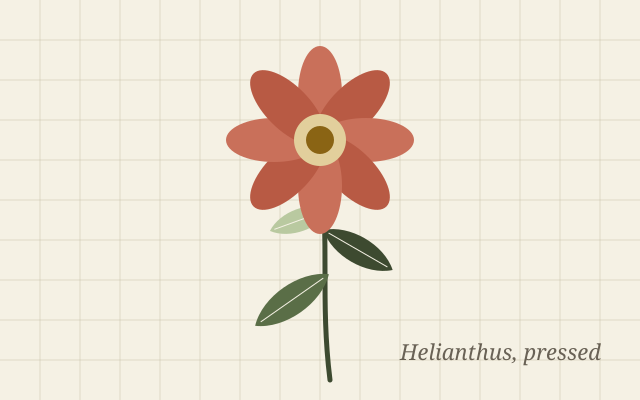
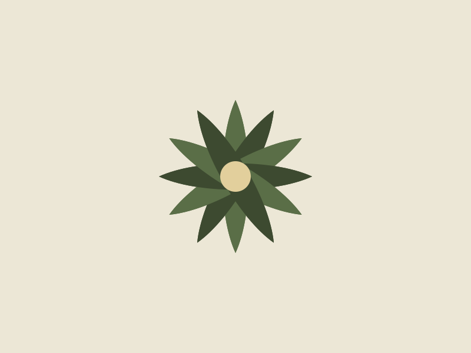
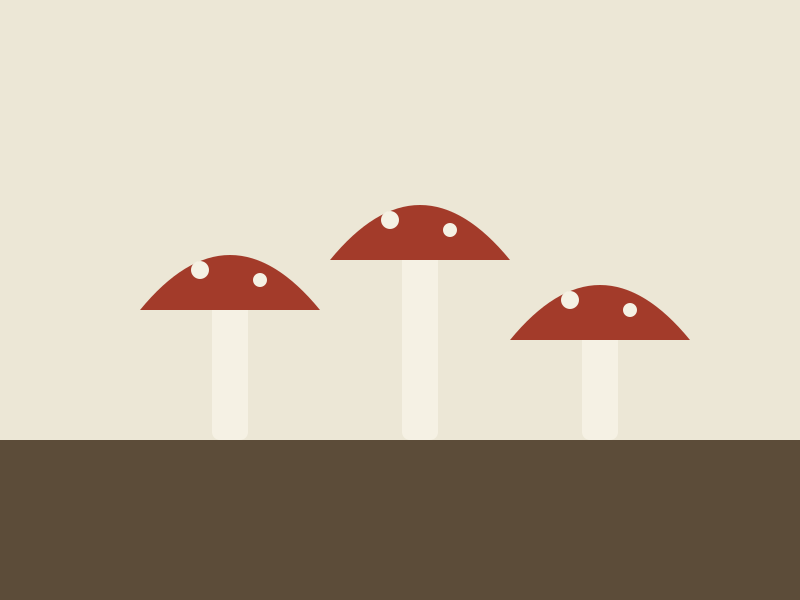
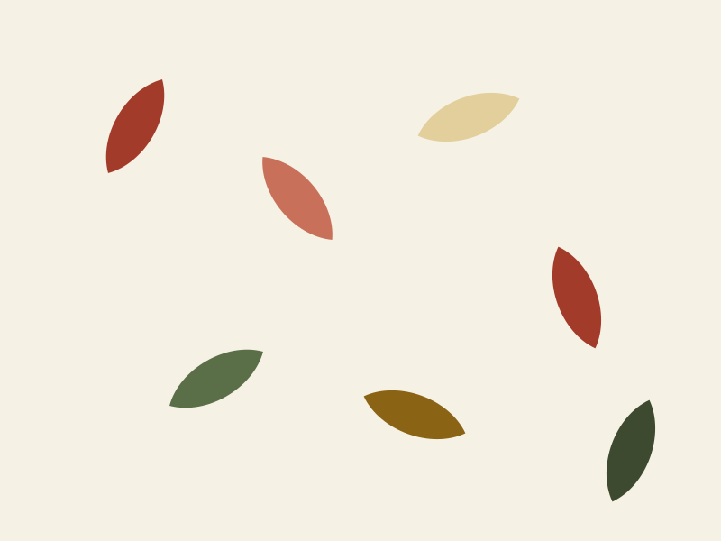

The specimen
Pressed from the north wall of the barn, May. The spore lines on the back run in pairs like the legs of a centipede, which is what scolopendrium means.
Field guide · Ferns · No. 12
Asplenium scolopendrium. An evergreen fern with undivided, strap-shaped fronds that shine. It grows in the cracks of old walls and the mouths of wells, and it will grow for you in any shade that never quite dries out.

Pressed from the north wall of the barn, May. The spore lines on the back run in pairs like the legs of a centipede, which is what scolopendrium means.
| Asks for | Gives |
|---|---|
| Shade, full or part | Evergreen, glossy, 30–60 cm |
| Soil that stays damp | Slow spread by spores, never a nuisance |
| Lime, if you have it | Hardy to −20 °C |
| Shelter from wind | Cover for frogs and beetles |
Plant it where the ground is coolest: the foot of a north wall, the shady side of a step, beneath a hedge. It does not want rich soil so much as soil that never bakes; a handful of grit and a mulch of leaf mould in autumn is all the feeding it needs. Old fronds can be cut away in late winter before the new ones unroll.
In a dry spell it will droop and look finished. Water it and it will stand up again by morning. The one thing it will not forgive is a summer of full sun.
If a wall is old enough to have a fern in it, it is old enough to be left alone.
14 May
Six new fronds on the barn plants since the rain. Spores ripe on last year's growth; sowed a tray onto damp brick and covered it.
2 August — the tray is green. Too early to tell what with.

No. 11
Finely cut and arching; the one to plant where the hart's-tongue would look too plain.

No. 13
White in March under the same trees, gone by June. Buy as dry roots in autumn.

No. 14
A native hedgerow tree with yellow leaves in autumn; the shade under which all of the above are happiest.